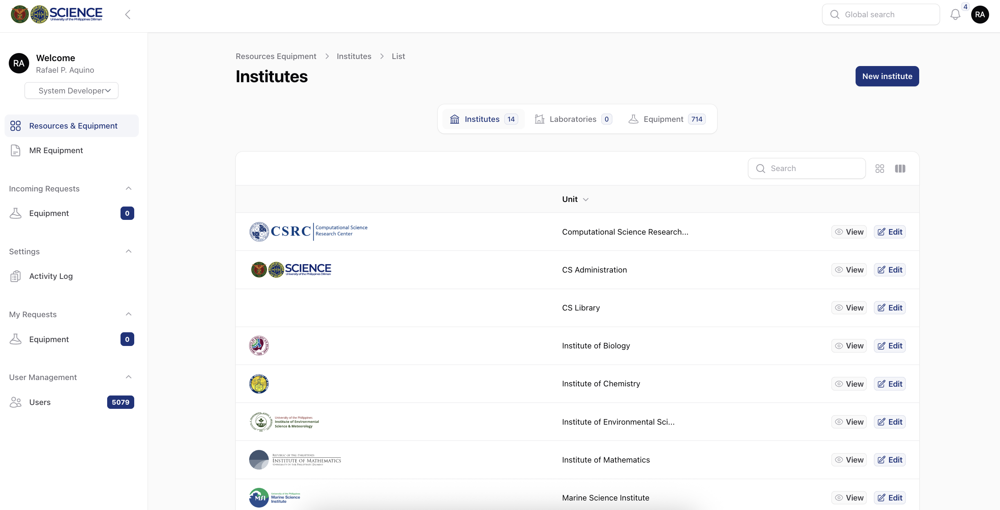

CS Resources & Equipment Database
University of the Philippines Diliman · College of Science


Purpose
Give faculty a central place to access, monitor, and share laboratory equipment across institutes.
My contribution
Developed the CS Resources & Equipment Database, including its backend functionality, user interface, and database structure.
- Tailwind CSS
- Alpine.js
- Laravel
- Livewire
- Filament
Development tools
- Postman
- GitHub Desktop
Integrations
- Pusher
- Google reCAPTCHA
Email service
- Gmail SMTP
Implementation & complete project stack
Resource workflows
Equipment management and sharing organized around College of Science laboratories and institutes.
Application stack
Laravel, Livewire, and Filament, with Tailwind and Alpine for the interface — the technologies recorded for this project.
Ongoing operations
Server checks, backups, database maintenance, and user support as part of administering the College’s institutional platforms.
Project context
The CS Resources & Equipment Database is a web-based system built for the University of the Philippines Diliman – College of Science (UPD-CS). It provides a centralized platform for managing, monitoring, and sharing equipment across laboratories and institutes. Designed to promote sustainability, accountability, and inter-institute collaboration, the system enables faculty members to efficiently access, track, and manage institutional resources.
Project stack
Frameworks & libraries
- Tailwind CSS
- Alpine.js
- Laravel
- Livewire
- Filament
Development tools
- Postman
- GitHub Desktop
Integrations
- Pusher
- Google reCAPTCHA
Email service
- Gmail SMTP